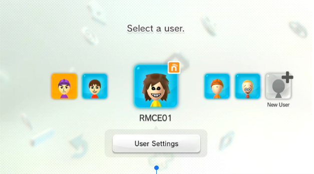
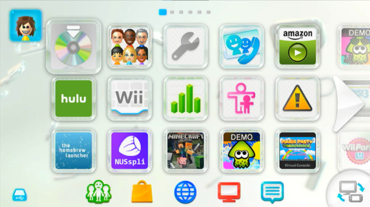

How to Downgrade your Wii U! - CymbalMonkey28
Welcome to my terrible guide on how to downgrade your Wii U Menu and Home Menu to v24.
Downgrading has no real advantages, and is more of a gimmick than anything, but it still is pretty
cool. It can brick your console, and this guide is no joke. If you aren't confident that you can do this,
stay away from this. It's riskier than it sounds.
I AM NOT RESPONSIBLE FOR ANY DAMAGE CAUSED TO YOUR SYSTEM BY THIS.
Pros:
You get an old menu.
Cons:
There's quite a lot of cons to doing this.
1. You lose all homebrew.
2. Lots of the UI Elements will not work. (No creating users, user settings, notifications.)
3. There's lots of room to brick your console. While most bricks can be recovered with UDPIH and recovery_menu, some can't.
4. When you are in the Wii U Menu, inserting a disc causes a crash. I don't know why. (Inserting a disc before boot will work though.)
What you need to do this
-A Raspberry Pi Pico/Pi Zero, or a moddable Switch. Click here to see if your Switch is moddable and how to mod it.
-A Wii U
-Time and Patience
-Brain Cells
Setting up UDPIH
Click here to download UDPIH for a Pico/Zero. If you are using a Switch, you need this guide. Once you setup UDPIH on your device, you need to download the latest version of recovery_menu and put it on the root of your Wii U's SD card.Getting the menu files
Once you have setup UDPIH, you need to obtain the menu files that you will downgrade to. Download JNUSTool and create a folder for to put the JNUSTool files in. (Note: For JNUSTool to work, you need to have Java installed.) Once you have downloaded it, open a Command Prompt window in the directory your JNUSTool is in and type the following:For the Wii U Menu Files:
"java -jar JNUSTool.jar 0005001010040100 v24 -dlEncrypted"
For the HOME Menu Files:
"java -jar JNUSTool.jar 000500301001010A v24 -dlEncrypted"
Once you have the files, copy the folders that JNUSTool gave you, and copy them to SD:/install.
Something to note
These downloads are for US consoles. If your console is European or Japanese, refer to the WiiUBrew Title Database to find the right title IDs for your region. Installing the wrong title IDs on a different region will result in a brick unless you have region changed.
Setting up wupclient
To connect to your Wii U for deleting and installing files, you need wupclient. You can download it here. You must use thsiAfter you download it, you need to modify it with a text editor and change the IP to your console's IP. The port does not need to be modified.
Deleting the old menu
Now it's time to start modifying files! Plug in your Pico/Zero/Switch to one of the front USB ports on your Wii U (It has to be one of the front ones, other wise this will not work.) Power on your Wii U, and when the Wii U logo appears, run the payload on your device. You should boot into the recovery_menu. Use the eject button to go down to "Start Wupserver" and press the power button. It should display your system's IP. Now on your computer, open a command prompt window where you have wupclient and type "python -i wupclient.py". Now be very careful, you can brick easily deleting the files. To delete the files type the following into Command Prompt:
For the Wii U Menu:
w.rmdir("/vol/storage_mlc01/sys/title/00050010/10040100")
For the HOME Menu:
w.rmdir("/vol/storage_mlc01/sys/title/00050030/1001010a")
Installing the new files
You can now install the old menu! In wupclient, type the following:
For the Wii U Menu:
install_title("install/tmp_0005001010040100_v24")
For the HOME Menu:
install_title("install/tmp_000500301001010A_v24")
Downgrading Versions.bin
Now you need to downgrade Versions.bin to boot the menu properly.
You just need to run this command in wupclient to delete the Versions.bin file on your console:
w.rmdir("/vol/system/security/versions.bin")
You now need to install the Versions.bin file you downloaded earlier using this command in wupclient:
install_title("install/tmp_0005001010041100_v24")
Then you can reboot and boot into your old menu!
The Results
Well, after all of that work, what do you get? Well, if you did everything right, you should be seeing something like this.

